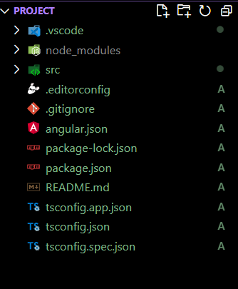

Angular é uma plataforma e estrutura para construção de aplicativos clientes de página única usando HTML e TypeScript. Angular é escrito em TypeScript. Ele implementa funcionalidades básicas e opcionais como um conjunto de bibliotecas TypeScript que você importa para seus aplicativos.
A arquitetura de uma aplicação Angular depende de certos conceitos fundamentais. Os blocos de construção básicos da estrutura Angular são componentes Angular organizados em NgModules. NgModules coletam código relacionado em conjuntos funcionais; um aplicativo Angular é definido por um conjunto de NgModules. Um aplicativo sempre possui pelo menos um módulo raiz que permite a inicialização e normalmente possui muito mais módulos de recursos. Os componentes definem visualizações, que são conjuntos de elementos de tela que o Angular pode escolher e modificar de acordo com a lógica e os dados do seu programa. Os componentes usam serviços, que fornecem funcionalidades específicas não diretamente relacionadas às visualizações. Os provedores de serviços podem ser injetados em componentes como dependências, tornando seu código modular, reutilizável e eficiente.
Módulos, componentes e serviços são classes que utilizam decoradores. Esses decoradores marcam seu tipo e fornecem metadados que informam ao Angular como usá-los.
Os metadados de uma classe de componente a associam a um modelo que define uma visualização. Um modelo combina HTML comum com diretivas Angular e marcação de ligação que permitem ao Angular modificar o HTML antes de renderizá-lo para exibição.
Os metadados de uma classe de serviço fornecem as informações que o Angular precisa para disponibilizá-las aos componentes por meio de injeção de dependência (DI).
Os componentes de um aplicativo normalmente definem muitas visualizações, organizados hierarquicamente. Angular fornece o serviço Router para ajudá-lo a definir caminhos de navegação entre visualizações. O roteador fornece recursos sofisticados de navegação no navegador.
Voltar ao topoOriginalmente, a reescrita do AngularJS foi chamado de "Angular 2" pela equipe, mas isto levou à confusão entre os desenvolvedores. Para esclarecer, a equipe anunciou que termos separados devem ser usados para cada Framework, com "AngularJS", referindo-se a 1.X versões e "Angular" sem o "JS", referindo-se às versões à partir da 2 até a última.
O Angular 2.0 foi anunciado no ng-Europe conference 22-23 de setembro de 2014. As mudanças drásticas na versão 2.0 criou uma considerável controvérsia entre os desenvolvedores. Em 30 de abril de 2015, os desenvolvedores Angular anunciaram que o Angular 2 foi transformado de Alfa a Developer Preview. O Angular 2 mudou-se para o Beta em dezembro de 2015, e a primeira versão foi publicada em Maio de 2016. A versão final foi lançada em 14 de setembro de 2016.
Em 13 de dezembro de 2016 Angular 4 foi anunciado, ignorando o 3 para evitar uma confusão devido ao desalinhamento da versão do pacote do roteador que já foi distribuído como v3.3.0. A versão final foi lançada em 23 de Março de 2017. O Angular 4 é compatível com o Angular 2. O Angular versão 4.3 é uma versão menor, o que significa que ele contém alterações que não são de última hora e que é uma atualização pequena para 4.x.x. Recursos na versão 4.3
Angular 5 foi lançado em 1 de novembro de 2017. Os principais aprimoramentos Angular 5 incluem suporte para web apps progressivos, uma compilação otimizadora e melhorias relacionadas ao Material Design.
O lançamento da sexta versão do Angular ocorreu no dia quatro de Maio de 2018. Esta versão teve um foco menor na base do framework, e maior na cadeia de ferramentas e em como tornar mais fácil e rápida a migração com Angular nas atualizações futuras, como os comandos da CLI (Interface de Linha de Comando): ng update, ng add, Angular Elements, Componentes Angular Material + CDK, Componentes Iniciais Angular Material, CLI Workspaces, Suporte a biblioteca, Provedores de Árvore Shakable, Melhoramentos no desempenho de animações, e atualização do RxJS para a versão 6.
A sétima versão do Angular foi lançada no dia dezoito de Outubro de 2018. Atualizações relacionadas ao desempenho de aplicativos, Angular Material & CDK, Rolagem Virtual, Melhor acessibilidade do elemento de formulário select (também conhecido por combobox ou dropdownlist), agora suporta Content Projection usando o padrão web para elementos personalizados, e atualizações de dependência em relação ao Typescript 3.1, RxJS 6.3, Node 10 (ainda suportando Node 8).
O lançamento da mais nova versão do Angular ocorreu em maio de 2019 e conta com algumas melhorias no funcionamento dos formulários reativos, melhoria na sintaxe para declaração de rotas lazy-loading e a esperada disponibilização do compilador Ivy, que nesta versão ainda está em preview e precisa ser habilitado, mas não é recomendado que se utilize em produção.
A versão 9 move todos os aplicativos para usar o compilador Angular Ivy por padrão. O Angular foi atualizado para funcionar com TypeScript 3.6 e 3.7.
Para instalar o Angular CLI (Command Line Interface), você precisará do Node.js e do npm (Node Package Manager) instalados em seu sistema. Siga estas etapas para instalar o Angular CLI:
Passo 1: Instalar o Node e o npm.
npm install -g @angular/cli
Agora que já temos o nosso Angular CLI instalado, podemos iniciar a criação de nossa aplicação com uma maior facilidade. Para criar a aplicação é necessário rodar o seguinte comando:
ng new nome-projeto
O ng é basicamente a sigla utilizada para rodar todos os comandos do CLI já o new vem de novo projeto e por fim você deve definir o nome do seu projeto. No meu caso ele irá se chamar “angular-projeto”. Ao rodar esse comando, ele vai começar as instalações das dependências e configurações. Esse processo poderá demorar alguns minutos.
Com as instalações já concluídas podemos então abrir o nosso projeto em uma IDE. No caso deste exemplo, vamos abrir no VS code.
Para a execução do projeto vamos utilizar nosso servidor local. Caso fosse necessário disponibilizar para um cliente por exemplo seria necessário a hospedagem da aplicação através de algum tipo de serviço.
Assim como qualquer outro framework, subir sua aplicação para um servidor que não seja local existe um pouco mais de esforço por se tratar da dependência de serviços externos. Para darmos início em nosso servidor local, vamos rodar o seguinte comando:
ng serve
Ele irá realizar o build e caso ocorra tudo certo retornará o caminho localhost para que possa abrir no google, dessa forma:
Ao entrar no localhost que ele fornece, você verá uma tela informando que seu projeto já esta rodando.
Com isso, sua aplicação já está rodando. Assim, já é possível começar a desenvolver sua aplicação do jeito que deseja.
Voltar ao topo